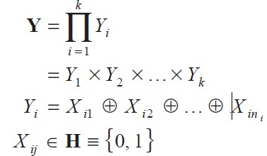
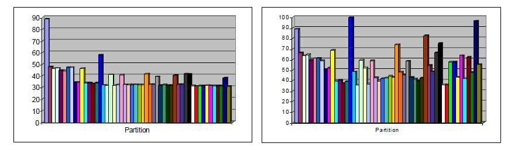
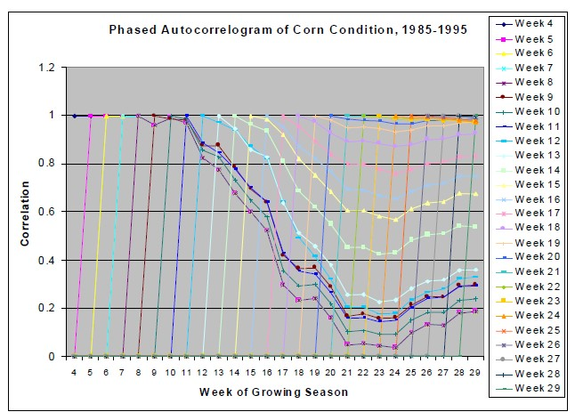
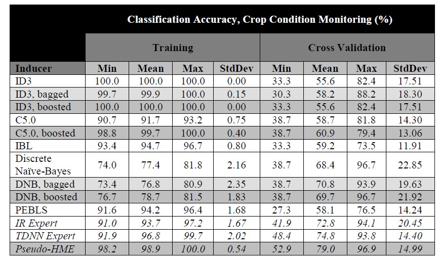
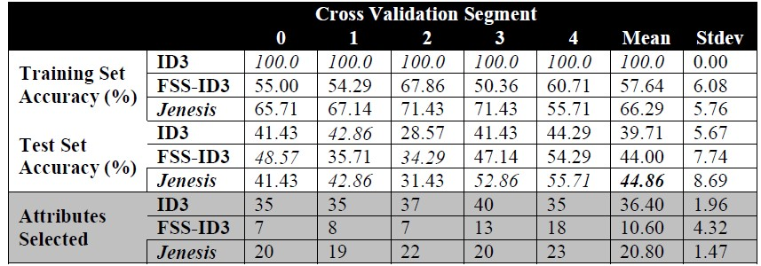

is known in the statistics literature as model-free estimation or nonparametric statistical
inference. A premise of this chapter is that, for learning from heterogeneous time series,
indiscriminate use of such models is too unmanageable. This is especially true in
diagnostic monitoring applications such as crisis monitoring, because decision surfaces
are more sensitive to error when the target concept is a catastrophic event (Hsu et al.,
1998).
The purpose of using model selection in decomposable learning problems is to fit
a suitable hypothesis language (model) to each subproblem (Engels, Verdenius, &
Aha,1998). A subproblem is defined in terms of a subset of the input and an intermediate
concept, formed by unsupervised learning from that subset. Selecting a model entails
three tasks. The first is finding partitions that are consistent enough to admit at most
one “suitable” model per subset. The second is building a collection of models that is
flexible enough so that some partition can have at least one model matched to each of
its subsets. The third is to derive a principled quantitative system for model evaluation
so that exactly one model can be correctly chosen per subset of the acceptable partition
or partitions. These tasks indicate that a model selection system at the level of
subproblem definition is desirable, because this corresponds to the granularity of
problem decomposition, the design choices for the collection of models, and the
evaluation function. This is a more comprehensive optimization problem than traditional
model selection typically adopts (Geman et al., 1992; Hjorth, 1994), but it is also
approached from a less precise perspective, hence the term coarse-grained.
This section presents experimental results with comparisons to existing inductive learning systems (Kohavi, Sommerfield & Dougherty, 1996): decision trees, traditional regression-based methods as adapted to time series prediction, and non-modular probabilistic networks (both atemporal and ARIMA-type ANNs).
Figure 3 shows the classification accuracy in percent for specialist and moderator output for the concept:

All mixture models are trained using 24 hidden units, distributed across all specialists and moderators. When used as a heuristic evaluation function for partition search, the HME metric documented in the previous section finds the best partition for the 5- attribute problem (shown below) as well as 6, 7, and 8, with no backtracking, and indicates that an MS-HME model should be used.
This section documents improvements in classification accuracy as achieved by
attribute partitioning. Figure 3 shows how the optimum partition {{1,2,3}{4,5}} for the
concept:
parity(x1, x2, x3) × parity(x4, x5)
achieves the best specialist performance for any size-2 partition.
Figure 3 shows how this allows it to achieve the best moderator performance overall. Empirically, “good splits” – especially descendants and ancestors of the optimal one, i.e., members of its schema (Goldberg, 1989) – tend to perform well.
As documented in the background section, partition search is able to find Partition #16, {{1,2,3}{4,5}} (the optimum partition) after expanding all of the 2-subset partitions. This reduces Bn evaluations to Θ(2n); attribute partitioning therefore remains an intractable problem, but is more feasible for small to moderate numbers of attributes (30-40 can be handled by high-performance computers, instead of 15-20 using exhaustive search). Approximation algorithms for polynomial-time evaluation (Cormen et al., 2001) are currently being investigated by the author.
For experiments using specialist-moderator networks on a musical tune classification
problem – synthetic data quantized from real-world audio recordings – the interested
reader is referred to Hsu et al. (2000).
Figure 4 visualizes a heterogeneous time series. The lines shown are phased
autocorrelograms, or plots of autocorrelation shifted in time, for (subjective) weekly
crop condition estimates, averaged from 1985-1995 for the state of Illinois. Each point
represents the correlation between one week’s mean estimate and the mean estimate for
a subsequent week. Each line contains the correlation between values for a particular
Figure 3: Mean classification accuracy of specialists vs. moderators for all (52)
partitions of 5-attribute modular parity problem.

week and all subsequent weeks. The data is heterogeneous because it contains both an autoregressive pattern (the linear increments in autocorrelation for the first ten weeks) and a moving average pattern (the larger, unevenly spaced increments from 0.4 to about 0.95 in the rightmost column). The autoregressive process, which can be represented by a time-delay model, expresses weather “memory” (correlating early and late drought); the moving average process, which can be represented by an exponential trace model, physiological damage from drought. Task decomposition can improve performance here by isolating the AR and MA components for identification and application of the correct specialized architecture – a time delay neural network (Haykin, 1999; Lang et al., 1990) or simple recurrent network (Principé & Lefebvre, 2001), respectively.
We applied a simple mixture model to reduce variance in ANN-based classifiers. A paired t-test with 10 degrees of freedom (for 11-year cross-validation over the weekly predictions) indicates significance at the level of p < 0.004 for the moderator versus TDNN and at the level of p < 0.0002 for the moderator versus IR. The null hypothesis is rejected at the 95% level of confidence for TDNN outperforming IR (p < 0.09), which is consistent with the hypothesis that an MS-HME network yields a performance boost over either network type alone. This result, however, is based on relatively few samples (in terms of weeks per year) and very coarse spatial granularity (statewide averages).
Table 3 summarizes the performance of an MS-HME network versus that of other induction algorithms from MLC++ (Kohavi et al., 1996) on the crop condition monitoring problem. This experiment illustrates the usefulness of learning task decomposition over heterogeneous time series. The improved learning results due to the application of multiple models (TDNN and IR specialists) and a mixture model (the Gamma network moderator). Reports from the literature on common statistical models for time series (Box et al., 1994; Gershenfeld & Weigend, 1994; Neal, 1996) and experience with the (highly heteroge-
Figure 4: Phased autocorrelogram (plot of autocorrelation shifted over time) for crop condition (average quantized estimates).

neous) test bed domains documented here bears out the idea that “fitting the right tool to each job” is critical.
Table 4 summarizes the performance of the ID3 decision tree induction algorithm and the state-space search-based feature subset selection (FSS) wrapper in MLC++ (Kohavi et al., 1996) compared to that of a genetic wrapper for feature selection. This system is documented in detail in Hsu, Welge, Redman, and Clutter (2002). We used a version of ALLVAR-2, a data set for decision support in automobile insurance policy pricing. This data set was used for clustering and classification and initially contained 471-attribute record for each of over 300,000 automobile insurance policies, with five bins of loss ratio as a prediction target. Wall clock time for the Jenesis and FSS-ID3 wrappers was comparable. As the table shows, both the Jenesis wrapper and theMLC++ wrapper (using ID3 as the wrapped inducer) produce significant improvements over unwrapped ID3 in classification accuracy and very large reductions in the number of attributes used. The test set accuracy and the number of selected attributes are averaged over five cross validation folds (70 aggregate test cases each). Results for data sets from the Irvine database repository that are known to contain irrelevant attributes are also positive. Table 10 presents more descriptive statistics on the five-way cross-validated performance of ID3, FSS-ID3 (theMLC++ implementation of ID3 with its feature subset selection wrapper), and Jenesis. Severe overfitting is quite evident for ID3, based on the Table 3: Performance of a HME-type mixture model compared with compared with that of other inducers on the crop condition monitoring problem
Table 3: Performance of a HME-type mixture model compared with compared with that of other inducers on the crop condition monitoring problem

difference between training and test set error (perfect purity is achieved in all five folds) and the larger number of attributes actually used compared to the wrappers. Jenesis and FSS-ID3 perform comparably in terms of test set error, though FSS-ID3 has less difference between training and test set error. and Jenesis is less likely to overprune the attribute subset. Note that FSS-ID3 consistently selects the fewest attributes, but still overfits (Jenesis achieves lower test set error in three of five cross validation cases). The test set errors of Jenesis and FSS-ID3 are not significantly different, so generalization quality is not conclusively distinguishable in this case. We note, however, that excessively shrinking the subset indicates a significant tradeoff regarding generalization quality. The classification model was used to audit an existing rule-based classification system over the same instance space, and to calibrate an underwriting model (to guide pricing decisions for policies) for an experimental market.
We have observed that the aggregation method scales well across lines of business (the indemnity and non-indemnity companies) and states. This was demonstrated using many of our decision tree experiments and visualizations using ALLVAR-2 samples and subsamples by state.
Support for this research was provided in part by the Army Research Lab under grant ARL-PET-IMT-KSU-07, by the Office of Naval Research under grant N00014-01- 1-0519, and by the Naval Research Laboratory under grant N00014-97-C-2061. The author thanks Nathan D. Gettings for helpful discussions on data fusion and time series analysis and an anonymous reviewer for comments on background material. Thanks also to David Clutter, Matt A. Durst, Nathan D. Gettings, James A. Louis, Yuching Ni, Yu Pan, Mike Perry, James W. Plummer, Victoria E. Lease, Tom Redman, Cecil P. Schmidt, and Kris Wuollett for implementations of software components of the system described in this chapter.
Table 4: Results from Jenesis for One Company (5-way cross validation), representative
data sets
